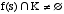
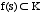
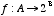
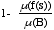
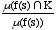
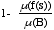
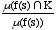
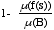
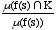

Date: Mon 19 Aug 2002 - 11:42:28 CEST
This was a response to my request on the Peirce-l list for enlightenment on abduction in biology. There were other interesting responses, but this was the most pertinent.
John
Date: Sun, 18 Aug 2002 13:35:31 -0700
From: Dennis Leri <dleri@mail.earthlink.net>
Subject: [peirce-l] Re: Biological information, constraints and Thirdness
To: Peirce Discussion Forum <peirce-l@lyris.acs.ttu.edu>
Reply-to: Peirce Discussion Forum <peirce-l@lyris.acs.ttu.edu>
X-LYRIS-Message-Id:
<LYRIS-7176-25940-2002.08.18-15.36.24--pljdc#alinga.newcastle.edu.au@lyris.ttu.edu>
X-Spam-Status: No,
hits=-1.8 required=6.5tests=IN_REP_TO,DOUBLE_CAPSWORD,PORN_3 version=2.31
X-Spam-Level:
List-Unsubscribe: <mailto:leave-peirce-l-7176J@lyris.ttu.edu>
John,
Do you know the intro to TOWARD A PRACTICE OF AUTONOMOUS SYSTEMS (MIT Press 1992/4, pages xi-xvii) by Francisco Varela and Paul Bourgine? After section 2 "Autonomy and Operational Closure" they take up the notion of abduction formally in section 3 "Abduction and Viability." I'll try to use MS Word to get the equations (inclusions?) into this note but I'm not sure they can be read by everyone let alone anyone. Anyway it goes like this (I edit a bit) :
"The concept of viability can be made quite precise (J.P. Aubin, 1991) Viability requires the dynamical description f of a system's closure as giving rise not to a unique solution, but to an ensemble of possible solutions. One works with differential inclusions and not equations. From amongst the ensemble of possible trajectories, the system must "choose" one so as not to depart from a domain of constraints which guarantee its continuity, the viability subspace K. Aubin's ideas are in reference to how a heteronomous system is kept viable by an observer introducing the appropriate control parameters, which are different from state parameters. Since autonomous systems are not endowed with a controller giving the well defined inputs, this is inadequate. The system is defined by its closure, the embodiment of sensori-motor cycles configuring what counts as perception and action. Every state change s(t) is the basis for the new state given by the closure dynamics f(s(t)) eventually modulated by the coupling with independent and unspecified perturbations. If we consider for clarity the discrete case this can be written as:
s(t+1)f(s(T))
The system will cease to operate when there are no more accessible states: its domain of dis-organization is thus defined. The viability domain can only be defined relative to f. In the classical theory of viability and control, one assumes K known and the observer or the system chooses the next state if one exists within K:

This point of view is too demanding for an appropriate theory of autonomous system, since it supposes an omniscient control from outside, even if the controlling agent is supposed to not be human but environmental optimizing parameters. For an autonomous unit we must modify the definition as follows:

This says that the function f for an autonomous system must guess, at any moment, a set of solutions that are all viable by eliminating all others. This capacity is best expressed in notion of abduction. C.S. Peirce states abduction as "the mind's capacity to guess the hypothesis with which experience must be confronted, leaving aside the vast majority of possible hypotheses without examination" (Peirce, 6.530). This is the reversal of the usual logical implication arrow, which is close to what we need for an autonomous behavior. To fix ideas let us give a logical characterization of abduction as follows:
Definition: an abductive machine is a function
which interprets the indices in a space A to produce a restricted domain of hypothesis in a space B.
This abductive capacity is both an eliminating and a hermeneutic (i.e. interpretive) capacity. We can evaluate these capacities in probabilistic terms by assuming a uniform measureon B, so that the eliminating abductive capacity is
the hermeneutic abductive capacity is
We are more interested here the hermeneutic capacity. The hermeneutic capacity of all states of K is one, but clearly, the above definition of a viability domain does not give the system a finite horizon of life. Once the system steps into its viability domain, it will remain forever within it. For a more realistic description, we consider domains where the hermeneutic capacity is only close to one.
We will now utilize the hermeneutic abductive capacity as a key notion for the understanding of autonomous devices with a large adaptability, since they do not know a priori their viability domain."
That concludes what I want to bring to your question. The section above was preceded by a description of operationally closed system (autonomous) and is followed by a linking of operational closure and viability domains. The "first refers to the algebraic closure of the system on the bassi of the previous state and its coupling; the second, to the fact it remains within the bounds so that its operation may continue and hence within the viability domain."
Maybe helpful, maybe not.
Sincerely,
Dennis Leri
Folks,
Recent discussion on a list on Foundations of Information Science led to the question of whether semiotics is foundational to information science, the reverse, or they have independent but overlapping domains. I don't want to get into that debate here, but a central idea was that constraints on biological systems are necessary for information to be meaningful (and along with other requirements of information in what can loosely be called an information system along the lines of Shannon, or, better Barwise and Seligmann, sufficient). The discussion led to discussion of abduction, with the suggestion that the integration of information with regard to constraints (e.g., requirements for survival) on biological systems (e.g., organisms) is a form of abduction. This seems to me to stretch the notion of abduction, but there does seem to be something going on here that is related to Pericean notions of habits and of Thirdness.
Anyway, I would be interested in getting any reactions from the list members on the notion of biological information, signs, and meaning from a Peircean perspective.
One thing worth noting is that biological information systems often involve regulatory networks. These typically have a "set point" (maybe several), and what is regulated is often several stages removed from the regulation system. The regulation systems is often distributed, so there may be numerous set points, or the "set point" can be only virtual, being the result of a number of interacting factors. Interesting issues are whether and when there is representation of any sort, is so, the subject ("owner") of the representation, the locus of representation, and the nature of the interpretation (related to the information content, if any).
I note that one way to see set points and other aspects of information flow is in terms of indices (like pointers in a computer program). How far one can interpret biological regulation as involving the manipulation of pointers and resulting changes in casual processes is an open question, so far as I know.
Any thoughts would be most valuable.
John
----------
Dr John Collier john.collier@kla.univie.ac.at
Konrad Lorenz Institute for Evolution and Cognition Research
Adolf Lorenz Gasse 2 +432-242-32390-19
A-3422 Altenberg Austria Fax: 242-32390-4
http://www.kli.ac.at/research.html?personal/collier
---
Message from peirce-l forum to subscriber dleri@earthlink.net
To unsubscribe send a blank email to: leave-peirce-l-7176J@lyris.ttu.edu
---
Message from peirce-l forum to subscriber pljdc@alinga.newcastle.edu.au
To unsubscribe send a blank email to: leave-peirce-l-7176J@lyris.ttu.edu



 



Received on Mon Aug 19 11:43:15 2002

